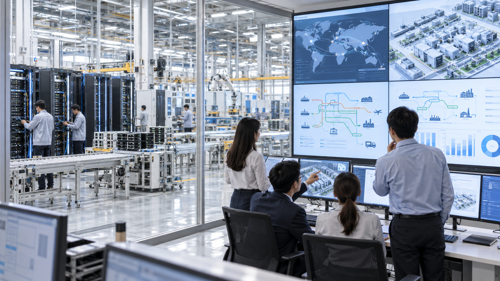
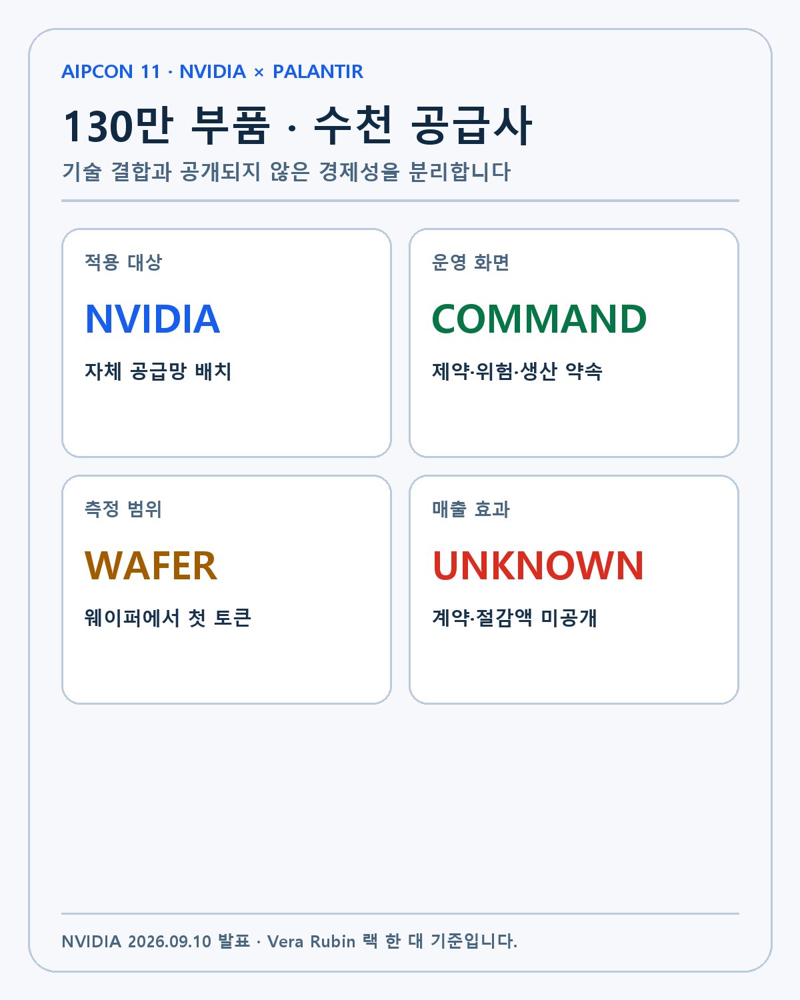
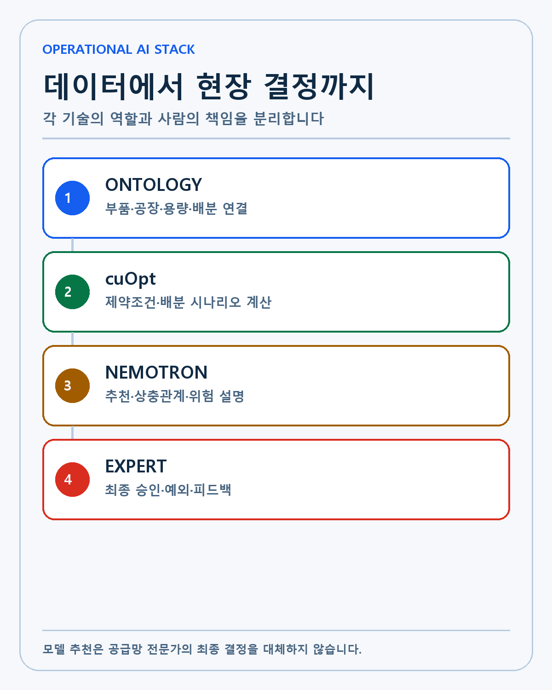
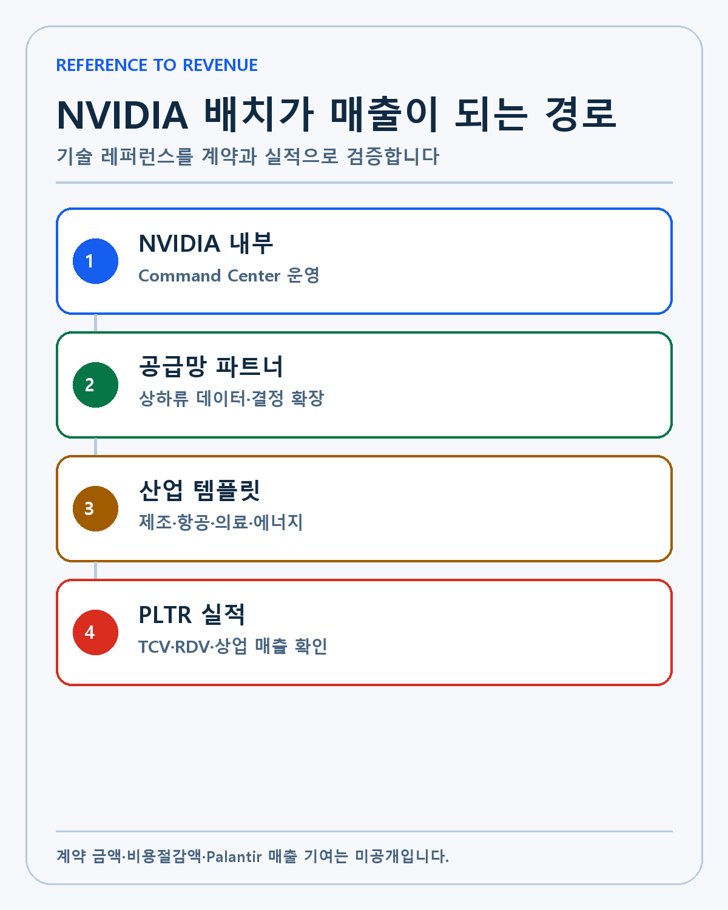
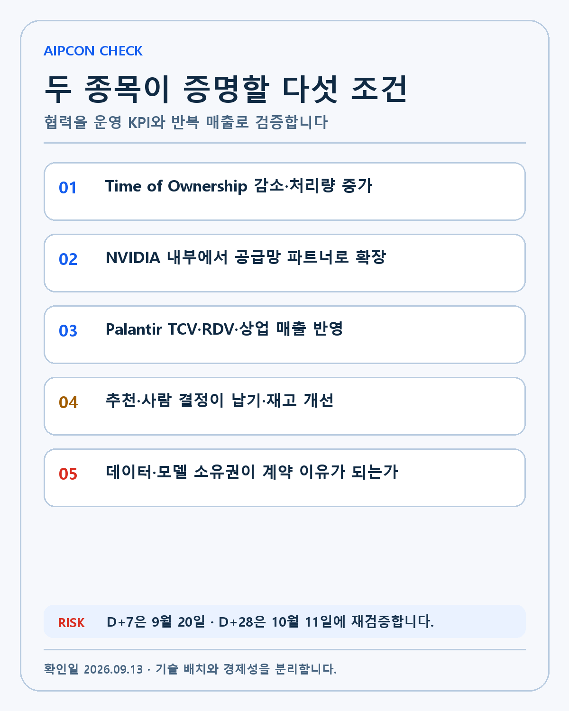

NVIDIA × PALANTIR · DEEP RESEARCH
NVIDIA·Palantir AIPCon 11 분석: 130만 부품 Command Center와 웨이퍼에서 첫 토큰까지
NVIDIA의 130만 부품 AI 랙 공급망을 Palantir Ontology·AIP, cuOpt·Nemotron과 사람의 판단으로 운영하는 구조를 검증합니다.
AIPCon 11에서 NVIDIA는 Palantir와 함께 만든 공급망 Command Center를 공개했습니다. 협업의 대상은 가상의 제조 사례가 아니라 NVIDIA 자체 운영입니다. GPU와 CPU, 메모리, 네트워크, 전력과 냉각 부품이 여러 공장과 공급사를 지나 고객 데이터센터에서 첫 토큰을 만들 때까지의 흐름을 하나의 운영 맥락으로 연결합니다.
이 사례를 단순한 파트너십 발표로 읽으면 두 회사가 왜 서로를 필요로 하는지 보이지 않습니다. NVIDIA는 복잡한 공급 제약을 계산할 연산·최적화·모델을 가지고 있습니다. Palantir는 흩어진 데이터와 현실의 부품·공장·생산 약속·행동 권한을 Ontology로 묶습니다. 숙련된 계획자의 결정을 기록하고 다음 추천을 개선하는 피드백 루프까지 한 환경 안에 둡니다.
투자 판단에는 한 단계가 더 필요합니다. 기술 구조와 내부 배치는 확인됐지만 계약 금액, 비용절감액과 Palantir 매출 기여는 공개되지 않았습니다. 이 글은 AIPCon에서 시연한 실제 업무, 두 회사가 각각 제공하는 층, 외부 고객으로 복제될 조건과 실패 가능성을 나눠 봅니다.

AIPCon 11에서 달라진 단계
NVIDIA와 Palantir의 협력은 2025년 10월 시작됐습니다. 당시 첫 공식 협력 발표는 NVIDIA CUDA-X, cuOpt, Nemotron과 Palantir Ontology·AIP를 결합해 기업 운영 AI를 만들겠다는 구조를 제시했습니다. Lowe's 공급망이 초기 적용 사례로 소개됐습니다.
2026년 1분기에는 Blackwell Ultra 기반 하드웨어와 Palantir 전체 소프트웨어를 함께 배치하는 Sovereign AI Operating System 참조 구조가 공개됐습니다. 데이터 위치와 지연시간, 보안 때문에 퍼블릭 클라우드만 사용할 수 없는 기업을 겨냥했습니다.
AIPCon 11에서는 단계가 다시 바뀌었습니다. NVIDIA가 자신의 핵심 공급망에 이 스택을 배치하고 Command Center, 제약 자재 배분과 계획자 피드백을 설명했습니다. 기술 통합 계획에서 참조 아키텍처를 거쳐 실제 내부 운영으로 이동한 것입니다.
발표 내용을 한 표로 정리합니다
| 층 | NVIDIA 역할 | Palantir 역할 | 검증할 결과 |
|---|---|---|---|
| 연산 인프라 | GPU·AI Factory | 배포·권한·운영 연결 | 지연시간·비용 |
| 데이터 구조 | Ops Data Platform | Foundry·Ontology | 연결률·갱신 속도 |
| 최적화 | cuOpt | AIP Logic·Agent | 시나리오 처리시간 |
| 언어 모델 | Nemotron | 맥락·도구·행동 권한 | 추천 정확도·설명성 |
| 학습 루프 | NeMo AutoModel·RL | Autopilot | 피드백 반영과 회귀 방지 |
| 현장 판단 | NVIDIA 계획자 | 근거·대안·감사 기록 | TOO·처리량·납기 |
| 배포 경계 | NVIDIA 데이터센터·모델 | Sovereign AI OS | 데이터·모델 소유권 |
NVIDIA의 AIPCon 11 공식 발표는 Nemotron 오픈 모델을 Foundry와 AIP에 통합하고 Palantir Ontology에 연결했다고 설명합니다. 첫 배치 대상은 NVIDIA 공급망입니다.

Vera Rubin 랙당 130만개 부품
NVIDIA는 Vera Rubin 랙 한 대에 약 130만개의 부품이 들어간다고 밝혔습니다. 하나의 랙을 완성하려면 연산 칩만 필요한 것이 아닙니다. 컴퓨트 보드, HBM과 서버 메모리, 네트워크 스위치와 케이블, 전력 변환, 냉각, 기계 부품이 같은 일정에 맞아야 합니다.
공급사는 수천 곳이고 여러 계약 제조사와 OEM이 같은 핵심 부품을 필요로 합니다. 특정 부품이 부족할 때 전체 생산량만 최대화하면 중요한 고객의 시스템이 늦어질 수 있습니다. 반대로 모든 공장에 조금씩 나누면 어떤 공장도 완제품을 만들지 못할 수 있습니다.
AI 인프라 수요가 빠르게 늘면서 제품 조합과 공장 수, 공급사의 수도 함께 늘었습니다. 공급망 계획은 더 이상 정적인 발주표가 아닙니다. 하루 동안 수요, 부품 도착과 공장 성과가 바뀌면 배분 결정을 다시 계산해야 합니다.
Constrained Material Allocation 문제
AIPCon 11 전사본에서 NVIDIA는 가장 어려운 공급망 문제를 Constrained Material Allocation, CMA라고 불렀습니다. 부족한 CPU, GPU, 메모리와 핵심 부품을 어느 제조사·공장·제품에 배분해야 최종 시스템 생산이 가장 빨라지는지를 정하는 문제입니다.
부품 하나에는 자체 BOM과 공급사, 리드타임이 있습니다. 같은 컴퓨트 보드를 필요로 하는 OEM이 여러 곳이면 한 배분 결정이 다른 시스템의 납기에 영향을 줍니다. 운송시간과 공장 용량, 불량률과 실제 생산 약속도 함께 계산해야 합니다.
사람은 경험으로 중요한 예외를 압니다. 하지만 여러 시스템과 스프레드시트를 오가며 정보를 연결하는 데 시간이 듭니다. AI가 유용하려면 현장의 관계와 제약을 읽고 계산 결과가 어떤 생산 약속을 바꾸는지 설명해야 합니다.
Command Center가 보여 주는 것
Command Center는 모든 공급망 데이터를 한 화면에 모으는 대시보드보다 범위가 넓습니다. 부품과 제조사, 공장, 생산 약속, 용량, 배분과 실제 결과를 Ontology로 연결합니다. 담당자는 현재 병목이 어디인지, 어떤 공급사의 위험이 큰지, 공장의 생산 약속이 현실적인지 확인합니다.
예상 생산량과 실제 생산량의 차이를 같은 객체와 관계에서 추적하면 원인을 거슬러 올라갈 수 있습니다. 부족한 부품을 다른 공장에 보낼 때 다른 제품과 고객 납기에 생기는 영향도 계산합니다. 실행한 배분 결정은 기록되고 이후 생산 결과와 비교됩니다.
여기서 Palantir의 역할은 데이터를 보기 좋게 그리는 데 끝나지 않습니다. Palantir 플랫폼 문서가 설명하듯 Ontology는 데이터·논리·객체·링크·행동을 함께 표현합니다. AI Agent가 허용된 행동을 실행하고 사람이 승인할 운영 경계가 생깁니다.
웨이퍼에서 첫 토큰까지
NVIDIA는 공급망의 시작을 웨이퍼, 끝을 고객이 만드는 첫 토큰으로 정의했습니다. 칩을 계약 제조사에 넘기거나 OEM에 출하하는 순간에 측정을 멈추지 않습니다. 랙이 조립되고 데이터센터에 설치돼 실제 AI 작업을 수행해야 공급이 완료됩니다.
이 범위를 측정하는 지표가 Time of Ownership입니다. 비싼 핵심 부품이 다른 재료를 기다리며 창고나 공장 안에 머무는 시간을 줄이려는 지표입니다. TOO가 낮아지고 처리량이 높아지면 같은 부품과 시설로 더 많은 시스템을 고객에게 전달할 수 있습니다.
투자자에게도 의미가 있습니다. NVIDIA의 매출은 시스템 인도 시점과 고객 준비 상태에 영향을 받습니다. 전력과 냉각, 네트워크 설치가 늦으면 GPU 수요가 있어도 첫 토큰이 늦어집니다. Command Center가 이 시간을 줄이면 출하 속도와 고객 가동, 다음 주문의 경제성에 영향을 줄 수 있습니다.
Ontology는 왜 범용 데이터 모델과 다른가
공급망에는 공통 용어가 있지만 회사마다 의사결정 규칙이 다릅니다. 어느 고객을 우선하고 어떤 공장에 부품을 배분할지, 재고를 얼마나 보유할지에 기업의 경험과 경쟁력이 들어갑니다.
범용 언어 모델은 문서를 요약할 수 있지만 NVIDIA의 공장·부품·고객 관계와 행동 권한을 자동으로 알지 못합니다. Ontology는 기업 고유의 객체와 관계, 함수와 승인 가능한 행동을 정의합니다. 같은 질문에 답할 때 어떤 데이터와 규칙을 사용했는지 추적할 수 있습니다.
NVIDIA 담당자는 이를 공장 Omniverse 디지털 트윈을 공급망 전체로 확장하는 접근으로 설명했습니다. 실제 공장 안의 기계뿐 아니라 제조 파트너와 부품 이동, 고객 배치까지 운영 그래프로 보는 것입니다.

cuOpt가 계산하고 Nemotron이 설명합니다
cuOpt는 제약조건 아래에서 배분과 경로를 최적화하는 NVIDIA 라이브러리입니다. 공장별 용량, 부품 도착, 운송과 제품 우선순위를 넣고 여러 선택의 결과를 계산합니다. 수학적 해를 찾는 역할입니다.
Nemotron은 공급망 데이터와 운영 맥락을 바탕으로 행동을 추천하고 상충관계를 설명합니다. AIP Agent는 Ontology의 객체와 허용된 도구를 사용해 시나리오를 실행합니다. 계획자는 결과를 검토하고 예외·고객 우선순위와 현실의 제약을 반영해 최종 결정을 내립니다.
발표자는 사람이 수작업으로 보는 제한된 시나리오보다 훨씬 큰 경우의 수를 계산해야 한다고 말했습니다. 이 발언은 운영 목표이지 감사된 생산성 성과가 아닙니다. 실제 시나리오 처리시간, 결과 정확도와 계획자가 추천을 채택한 비율은 아직 공개되지 않았습니다.
사람을 없애는 자동화가 아닙니다
공급망은 틀린 추천 하나가 수십억달러의 생산 일정에 영향을 줄 수 있습니다. 모델이 최고 점수의 배분을 제시해도 고객 전략, 품질 문제와 협력사 관계 같은 정보가 계산에 완전히 들어가지 않을 수 있습니다.
Command Center는 반복 데이터 수집과 낮은 가치의 검토를 자동화하고 숙련 계획자가 예외와 중요한 상충관계에 집중하도록 설계됐습니다. 시스템은 근거를 보여 주고 선택지를 계산하지만 결정 책임은 사람에게 남습니다.
계획자가 AI와 다른 결정을 내렸을 때 그 이유를 버리지 않는 점도 중요합니다. 결과가 좋았다면 회사의 암묵지가 새로운 규칙과 학습 데이터가 됩니다. 결과가 나빴다면 같은 오류를 반복하지 않도록 평가 기준을 조정할 수 있습니다.
통제된 학습 루프
Palantir Autopilot은 계획자의 피드백과 운영 결과를 모델 개선 과정으로 연결합니다. NVIDIA NeMo AutoModel과 NeMo RL은 모델 재학습과 평가를 지원합니다. 추천, 사람의 선택과 생산 결과가 다시 운영 데이터로 돌아옵니다.
이 구조는 모델을 한 번 미세조정하고 끝내는 방식과 다릅니다. 공급망 환경이 바뀌고 새로운 Rubin 구성과 공급사가 들어오면 모델도 새 결과로 검증돼야 합니다. Palantir가 회의와 이메일, 전문가 상호작용을 동의 아래 기록해 Ontology의 기억으로 만들었다는 설명도 나왔습니다.
피드백 루프 자체가 NVIDIA의 운영 지식입니다. 경쟁사가 같은 Nemotron 모델을 사용해도 NVIDIA의 배분 결정과 결과 데이터가 없으면 같은 모델을 만들기 어렵습니다. Palantir에는 고객 고유 지식을 통제 가능한 소프트웨어 자산으로 바꾸는 역할이 생깁니다.
왜 주권 AI가 필요한가
NVIDIA 공급망에는 제품 구성, 부품 부족, 공급사 성과와 고객 우선순위가 담깁니다. 시장은 작은 소문으로도 칩 생산량과 매출을 추정합니다. 이런 데이터를 외부 범용 모델 서비스에 그대로 보내기 어렵습니다.
이번 배치는 NVIDIA 하드웨어와 NVIDIA 데이터센터에서 NVIDIA 모델을 사용하고 Palantir 스택을 온프레미스로 운영합니다. 고객은 데이터와 모델, 미세조정 결과와 피드백 루프를 통제합니다. 빠른 AI 활용과 기밀 보호를 동시에 요구한 결과입니다.
Palantir Q1 2026 Business Update는 이 구조를 Sovereign AI Operating System으로 설명했습니다. 참조 아키텍처는 Dell과 Cisco 인프라에서도 지원됩니다. 제조·정부·금융과 의료처럼 데이터 위치와 감사가 중요한 고객에게 배포 선택지를 넓힙니다.
두 회사의 제품이 서로를 판매합니다
NVIDIA는 기업이 AI를 도입할 때 필요한 GPU, 네트워크, 모델과 최적화 소프트웨어를 제공합니다. Palantir는 기업 데이터와 운영 흐름, 권한을 연결해 AI가 실제 행동을 하도록 만듭니다. 어느 한쪽만으로는 공급망 전체를 운영하기 어렵습니다.
Palantir 고객이 Nemotron과 cuOpt를 사용하면 NVIDIA 소프트웨어와 연산 수요가 생깁니다. NVIDIA 고객이 공급망·제조·정부 환경에서 AI를 운영하려면 Palantir의 Ontology와 AIP를 선택할 수 있습니다. 두 회사가 상대방의 고객 접점과 구현 역량을 확장하는 구조입니다.
이 효과를 매출로 확정할 수는 없습니다. 고객이 다른 모델이나 최적화 도구를 선택할 수 있고 자체 소프트웨어를 만들 수도 있습니다. 통합 비용과 Palantir 인력이 많이 필요하면 대량 확산 속도가 느려질 수 있습니다.

NVIDIA 내부 배치가 갖는 레퍼런스 가치
NVIDIA는 AI 인프라 공급망의 병목을 직접 겪는 회사입니다. 수요가 강해도 HBM, 기판, 네트워크와 전력이 맞지 않으면 매출로 전환되지 않습니다. 이 환경에서 Palantir가 사용된다는 사실은 기술 난도와 보안 요구를 견딜 수 있다는 강한 레퍼런스입니다.
NVIDIA는 내부 학습을 공급망 파트너와 다른 기업으로 확대할 계획입니다. 제조업, 에너지, 의료, 자동차와 항공우주 기업은 부품 배분과 납기 약속이라는 비슷한 문제를 가지고 있습니다. 공통 구조를 템플릿으로 만들고 회사별 Ontology와 모델을 조정하면 반복 판매가 가능합니다.
반복 판매는 아직 계획입니다. 외부 파트너 이름과 계약 규모, 도입 일정이 구체적으로 공개돼야 합니다. Palantir의 TCV·RDV와 미국 상업 매출에서 공급망 고객이 차지하는 비중이 늘어나는지도 확인해야 합니다.
매출과 비용절감은 UNKNOWN입니다
공식 발표와 AIPCon 자료에는 NVIDIA와 Palantir 사이의 계약 금액이 없습니다. Palantir가 라이선스·구축·운영에서 얼마를 받는지, NVIDIA가 재고와 납기에서 얼마를 절약했는지도 공개되지 않았습니다.
따라서 이 프로젝트를 두 회사의 실적에 임의로 더하지 않습니다. Command Center가 전사 배치됐는지 특정 문제의 초기 단계인지도 더 확인해야 합니다. 시연 화면이 실제 운영 데이터를 사용한다는 설명은 있었지만 장기 운영 KPI는 없습니다.
경제성을 입증하려면 TOO 감소, 처리량과 정시 납품, 재고 회전, 생산 약속 정확도와 계획자 처리시간이 필요합니다. Palantir에는 고객 확장과 계약 전환, NVIDIA에는 시스템 출하와 고객 가동 속도가 연결돼야 합니다.
두 종목 집중의 공통 위험
저는 엔비디아와 팔란티어를 AI 시대의 핵심 플레이어로 보고 높은 비중을 받아들이고 있습니다. 이번 사례는 두 회사의 기술 논리가 맞물린다는 증거입니다. 동시에 같은 기업 AI 투자와 데이터센터 사이클에 노출된 공통 위험도 드러냅니다.
AI 인프라 수요가 둔화하면 NVIDIA 시스템 생산이 줄고 Palantir 공급망 템플릿의 확산도 늦어질 수 있습니다. 모델의 경제성이 약하거나 기업이 운영 AI를 실험에서 전사 배치로 옮기지 못하면 두 회사의 기대가 함께 낮아집니다.
집중 자체를 이유로 매도하지는 않습니다. 두 회사가 각자의 해자를 유지하고 실제 매출·현금흐름으로 바꾸는지 별도로 검증합니다. 협력 발표 하나로 중복 확신을 두 번 계산하지 않겠습니다.
강세·기준·약세 시나리오
강세 시나리오에서는 Command Center가 NVIDIA의 상하류 파트너까지 확장됩니다. TOO가 낮아지고 처리량·납기 정확도가 개선됩니다. Palantir는 같은 템플릿을 여러 산업에 판매하고 미국 상업 계약과 매출에 반영합니다.
기준 시나리오는 NVIDIA 내부에서 의미 있는 운영 효율이 생기지만 외부 고객은 데이터 통합과 보안 검토에 시간이 필요한 경우입니다. NVIDIA는 공급망 가시성을 얻고 Palantir는 레퍼런스를 확보하지만 단기 매출 기여는 작을 수 있습니다.
약세 시나리오는 데이터 연결이 늦고 추천이 현장 예외를 충분히 반영하지 못하는 경우입니다. 계획자가 기존 도구로 돌아가고 외부 고객이 초기 구축비용을 감당하지 않으면 시연이 반복 가능한 제품으로 발전하지 못합니다.
가설 무효화 조건

- NVIDIA가 장기간 사용해도 TOO·처리량·납기 관련 개선 지표를 제시하지 않습니다.
- Command Center가 NVIDIA 내부 일부 문제를 넘어 파트너로 확장되지 않습니다.
- Palantir의 상업 계약과 매출에서 공급망 템플릿의 반복 판매가 보이지 않습니다.
- 모델 추천과 사람의 결정 사이 오류·감사·보안 문제가 반복됩니다.
- AI 인프라 투자 둔화로 시스템 출하와 첫 토큰까지의 수요가 약해집니다.
제 투자 판단
이번 AIPCon은 두 회사가 말해 온 해자를 실제 산업 문제에 연결했습니다. NVIDIA의 연산과 최적화, Palantir의 Ontology와 배포 능력이 공급망 Command Center 안에서 함께 작동합니다. 엔비디아가 Palantir의 고객이면서 기술 제공자라는 점도 관계를 단순 구매계약보다 깊게 만듭니다.
기술적 가치는 높게 평가합니다. 경제적 가치는 아직 후속 검증이 필요합니다. 저는 NVIDIA의 TOO·처리량과 파트너 확장, Palantir의 TCV·RDV·상업 매출을 확인한 뒤 이 협력이 장기 복리의 새로운 축인지 판단하겠습니다.
다음 확인일은 9월 20일과 10월 11일입니다. D+7에는 추가 파트너와 AIPCon 세부 자료를, D+28에는 계약·운영 KPI와 실적 반영 여부를 확인합니다.
이 글은 개인 투자 기록이며 특정 종목의 매수·매도를 권유하지 않습니다. 발표된 기술 구성과 계획은 실제 비용절감·매출을 보장하지 않으며 모든 투자 판단과 책임은 투자자 본인에게 있습니다.
작성 방법
2026년 9월 13일 기준 공식 자료와 공시를 우선하고 실제·회사 전망·시나리오·UNKNOWN을 분리했습니다.
개인 투자 기록이며 특정 종목의 매수·매도를 권유하지 않습니다.